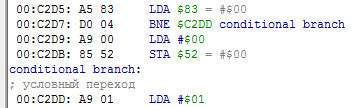

Содержание
После добавления/редактирования/удаления комментария через Hex Editor или Debugger, эмулятор автоматически становится на паузу. Если он уже стоит на паузе, то ничего не изменится.
Чтобы добавить комментарий на код, кликни в Debugger'е правой кнопкой по адресу инструкции. В окне Symbolic Debug Naming введи имя комментария в поле ввода Name, этот текст будет отображаться синим цветом. При желании можно также добавить пометку в поле ввода Comment, которая будет отображаться серым цветом под основным комментарием.
Без наличия текста в Name комментарий создать через Debugger не получится, даже при наличии текста в Comment. Это можно сделать лишь при ручном редактировании .nl файла.
В старой версии эмулятора нельзя добавить комментарий с символами кириллицы, а также размер текста в Name ограничен 30-ю символами.
Поле Comment подходит для подробных заметок. Если это адрес кода, можно описать задачу инструкции или целой подпрограммы. Если это адрес RAM, можно указать какие байты бывают в этом адресе и значение этих байтов. А чтобы посмотреть свою заметку по RAM адресу, кликни на комментарии правой кнопкой для открытия окна редактирования.
Добавленный комментарий можно отредактировать, кликнув правой кнопкой на синем тексте комментария (или на адресе).
Комментарий, добавленный на адрес, отображается только в том случае, когда Debugger распознал по этому адресу некую инструкцию. Его можно насильно отобразить только если перейти по этому адресу самостоятельно, например через кнопку Seek To. С этим часто сталкиваешься при переписывании кода. Нужно вручную отредактировать файл с комментариями под обновленный код, чтобы старые комментарии вновь были видны уже по новым адресам.
Добавленный комментарий на адрес NES Memory будет также отображаться там, где этот адрес используется в качестве операнда инструкции. Например, после добавления комментария на адрес $C2DD справа от инструкции условного перехода

Серый текст из Comment не отображается в операнде инструкции.
В старой версии эмулятора комментарии перезаписывают адрес операнда, а не отображаются рядом с ним.
Добавить комментарий правым кликом можно лишь по 16-битному адресу. Если адрес 8-битный, он недоступен для клика, например адрес $0051 в инструкции

Чтобы добавить на него комментарий, можно перейти на этот адрес через кнопку Seek PC (или закладку), а затем добавить комментарий на этот адрес как на адрес инструкции.

Либо можно найти этот адрес в Hex Editor'е и добавить комментарий через него.

Комментирование через Hex Editor больше подходит для RAM адресов $0000-$07FF, чем для остальных адресов NES Memory.
Добавляя комментарии на RAM адреса, можно сделать незнакомый код более читаемым и понять его значение.
Если мне нужно добавить довольно много пометок по RAM адресу, например когда в адресе может быть множество различных байтов и все они имеют важное значение, то я храню эти пометки в отдельном текстовом файле, а в поле Comment пишу "смотреть описание в текстовом файле"
Сняв в Debugger'е галочку Symbolic debug, можно временно отключить отображение своих комментариев.

Чтобы удалить комментарий, достаточно удалить текст, записанный в поле ввода Name. Удобно, что при открытии окна Symbolic Debug Naming этот текст уже выделен целиком, остается лишь нажать Backspace или Ctrl + X и сохранить.
Также можно отредактировать .nl файл, в котором хранится комментарий, сохранить файл, а затем нажать в Debugger'е кнопку Reload Symbols.